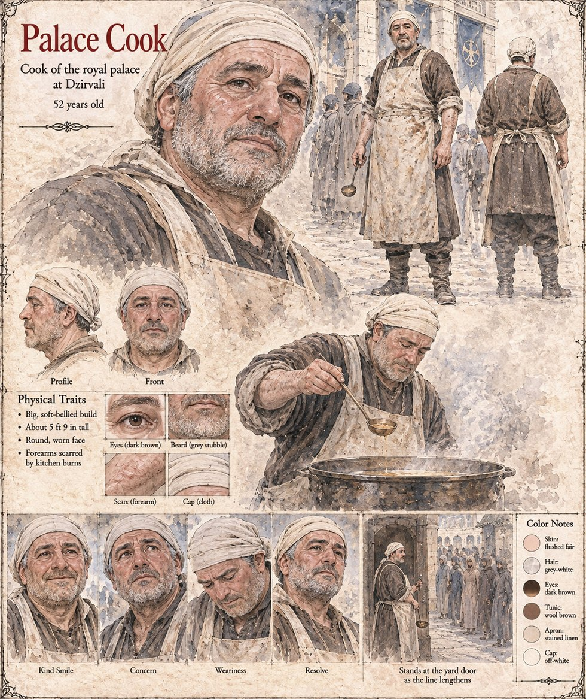

Palace Cook
Cook of the royal kitchens at Dzirvali · keeper of the smallest ladle · unnamed · 52 on his sheet
The palace at Dzirvali is a long, low, many-courtyarded thing with the kitchens at the front and the throne room at the back, a plan the chroniclers explain as a defense against assassins and the court explains, more accurately, as the natural arrangement of a kingdom whose sole sacred object was bread. The manuscript gives its cook no name. In Havren of the Unclouded Year, when the famine that the court has taken to calling a Testing is in its third month, he ladles the morning broth for the children who come to the yard door and gives it out, as the old queen had once done, by the smallest ladle: forty children on the first morning of the month, two hundred on the fifteenth, and on the last a number he does not write down, because it has begun to include children who stand in the line holding the hands of children who cannot stand.
He kept the ladle. It was the only account he kept, and nobody ever asked him for it. It is the manuscript’s other ledger, the one in the kitchens: no columns, no heading, a utensil, held by a man who is not a king and cannot picture the sky. From the third month the king sends his own portion down to the yard door, as his mother had, and when he lies dying behind the throne room, it is the kitchen children, a few of whom were still alive in the palace, who call what is happening to him by a plainer name than a wasting. After the funeral rain the wooden spoon that his mother had kept in her sleeve ends up in a drawer among the kitchens’ ladles, and nobody knows what it is for.
The manuscript gives the kitchens, the yard door, the ladle and the line, and no age, face, voice or name. The sheet’s age of 52, big, soft-bellied build of about 5 ft 9 in, round, worn face, forearms scarred by kitchen burns, dark brown eyes, grey-white hair under a cloth cap, grey stubble, brown wool tunic and stained linen apron, and the steaming cauldron are its own, as are its panels Kind Smile, Concern, Weariness and Resolve. Its scene, Stands at the yard door as the line lengthens, follows the manuscript.
“He kept the ladle. It was the only account he kept, and nobody ever asked him for it.”